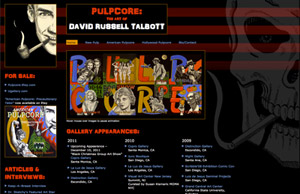
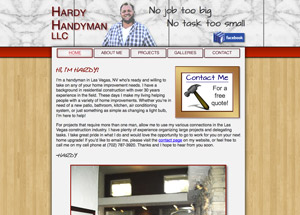
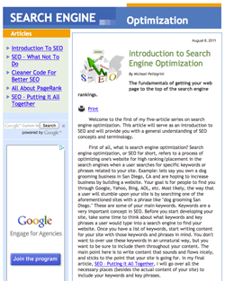
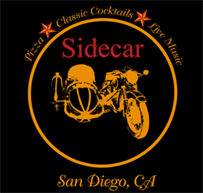
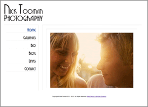

PULPCORE
This site was designed for San Diego ‘Pulpcore’ artist David Russell Talbott. David was looking for a new website with a modern feel that would do his artwork justice. The idea was to give the site a dark, sinister vibe that was easy to read and navigate, but wouldn’t distract the visitor from his pieces.
All design elements were handled with CSS, keeping the HTML clean and efficient. The image scroller on the home page was done with jQuery.
www.DavidRussellTalbott.com
HARDY HANDYMAN
I designed and developed this site for Las Vegas handyman and general contractor, Hardy Niggemeier. Hardy wanted a site that would showcase his various projects to potential clients, and help him find new clients based on a professional web presence.
The main technologies used in this site were XHTML, CSS, and jQuery, keeping it clean, semantic, and cross platform compatible.
www.HardyHandymanLLC.com
SEARCH ENGINE OPTIMIZATION
This is a website that I've been wanting to do for quite a while. While working at Business Marketing Services in Seattle I did extensive research on Search Engine Optimization. In addition to building websites for our clients, we offered SEO services to help get their sites to the top of the search engine listings. One of my duties as lead web developer was to optimize our client's existing sites as well as build new sites with optimal search engine ranking in mind.
After several years working on SEO related projects, I felt it was time to put together my own series of articles outlining the steps towards creating a successful SEO campaign. I feel that this site not only showcases my abilities in building a business oriented website, but also my skills as a technical writer and SEO specialist.
www.PellegriniPage.com/Portfolio/SEO
SIDECAR
Sidecar is a website I designed to showcase a restaurant concept that I've been building in my head for years. It started with the logo you see on the right and turned into a complete vision. Although it's doubtful that Sidecar will ever actually become a real restaurant, it was a fun project to develop.
The site is full of high resolution graphics and lots of jQuery bells and whistles. It was definitely not meant to be bandwidth friendly but I must admit that there is a certain sense of freedom that comes with including a 400k graphic on your site just because it looks cool! I hope you like it.
www.PellegriniPage.com/Portfolio/Sidecar
NICK TOOMAN PHOTOGRAPHY
Nick Tooman is a Los Angeles based photographer who came to me for a website that would showcase his work and allow potential clients to get in touch with him. He wanted a design that was very clean and minimalistic, allowing the user to focus directly on his photos rather than be distracted by lots of web graphics.
The site is still technically under construction but can be shown in it's current state.
www.NickTooman.com/Test
KEMPO TRAINING SYSTEMS

Kempo Training Systems is a new martial arts school in Ocean Beach, San Diego that teaches the ancient art of Kempo. I was approached by the school's owner to design a logo and website to help recruit new students. In addition to design and development work, I did extensive research in order to write all home page content.
The school is still working on content and scheduling, which is why the site is still under construction, but from a design perspective the site has come far enough to be shown to the public.